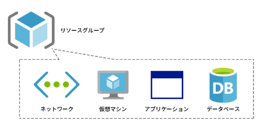
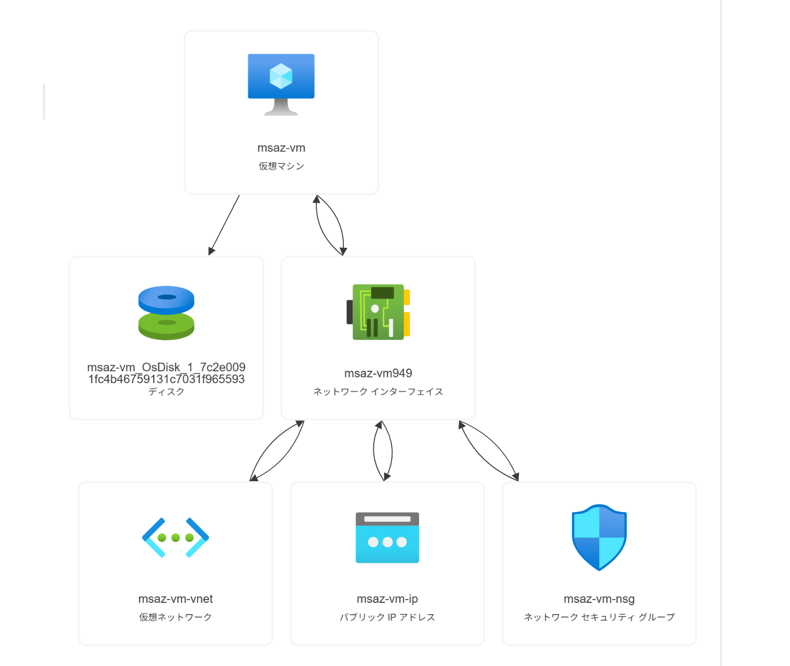
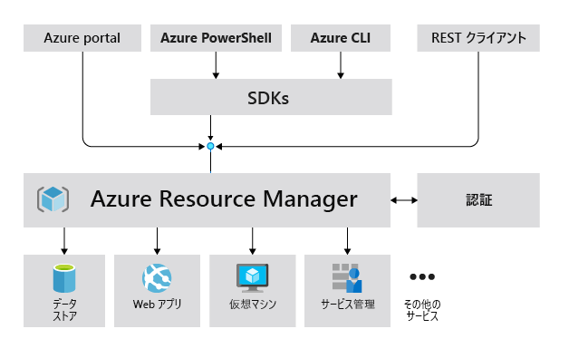
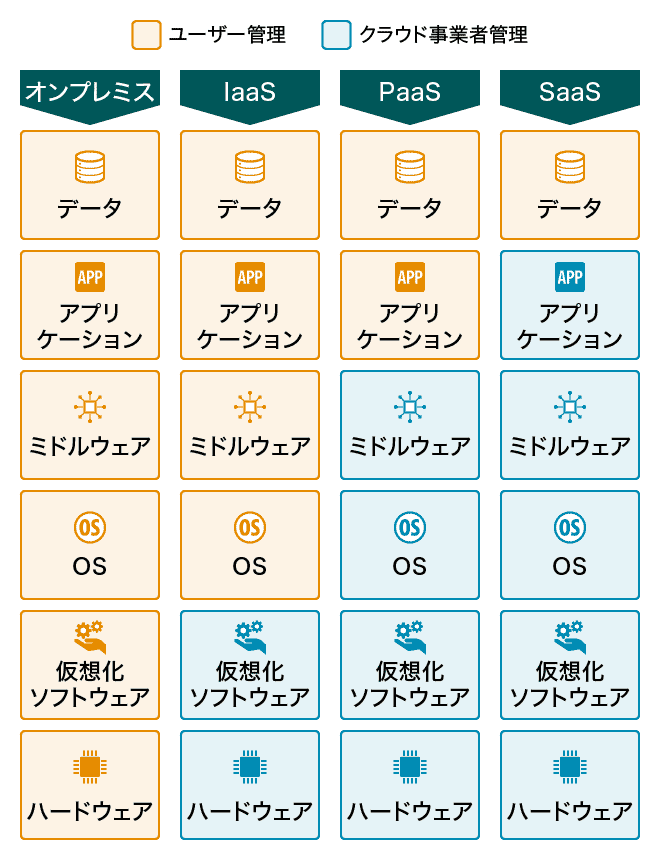

管理単位

- Microsoft Entra テナント： 認証基盤
- 管理グループ： 組織・ポリシー統制
- サブスクリプション： 契約単位・課金単位
- リソース グループ： まとめる入れ物
- リソース： サービス実体 (ストレージ、ネットワーク、仮想マシン 等)
リソース グループ
リソース グループは リソースをまとめる論理的な入れ物です。
すべてのリソースは、どれか1つのリソース グループに必ず所属します。

リソース
オンプレミスで使っていたサーバー、ネットワーク、ディスクに相当する機能を、
Azure では 仮想マシン、仮想ネットワーク、マネージド ディスク などのリソースとして作成・更新・削除します。

| カテゴリ | リソース名 | 概要・役割 |
|---|---|---|
| 計算 (Compute) | 仮想マシン (VM) | クラウド上のサーバー実体（IaaS）。自由度の高いOS管理が可能。 |
| ストレージ | ストレージ アカウント (Storage Account) | Blob（ファイル）、File、Queue、Tableなどのデータを格納する汎用コンテナ。 |
| ストレージ | マネージド ディスク (Managed Disks) | 仮想マシンに接続してOSやデータを保存する専用の仮想ディスク。 |
| ネットワーク | 仮想ネットワーク (VNet) | Azure内におけるユーザー専用のプライベートなネットワーク空間。 |
| ネットワーク | ネットワーク インターフェイス (NIC) | 仮想マシンをVNetに接続するための論理的なアダプター。 |
| ネットワーク | パブリック IP アドレス (Public IP Address) | インターネットからリソースへアクセスするための外向きIP。 |
| ネットワーク | ネットワーク セキュリティ グループ (Network Security Group) | 通信の許可・拒否を設定するファイアウォール。 |
| 計算 (Compute) | App Service | WebアプリケーションやAPIをホストするためのPaaS。 |
| データベース | Azure SQL Database | SQL Serverベースのフルマネージドなリレーショナルデータベース。 |
| 分析 / ID | Microsoft Fabric | データの移動からデータサイエンス、リアルタイム分析までを統合したSaaS。 |
| 分析 / ID | Microsoft Entra ID | ユーザーの認証やリソースへのアクセス権限を管理するIDサービス。 |
Azure Resource Manager（ARM）
Azure のリソースは Azure Resource Manager（ARM）というしくみにより管理されます。
ARM は各リソースへの要求を受付け、リソースの作成、設定変更、削除などを行う管理基盤です。

さまざまなユーザー インターフェイスにより ARM へのリクエストが可能です。
GUI である Azure portal と CLI である Azure PowerShell など異なるユーザー インターフェイスを使っていても、最終的に ARM へアクセスされるため、同じ操作が可能となっています。
共同責任モデル
